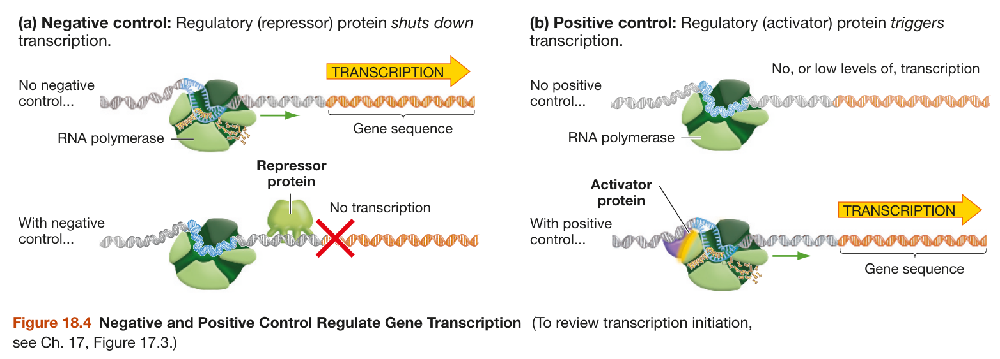
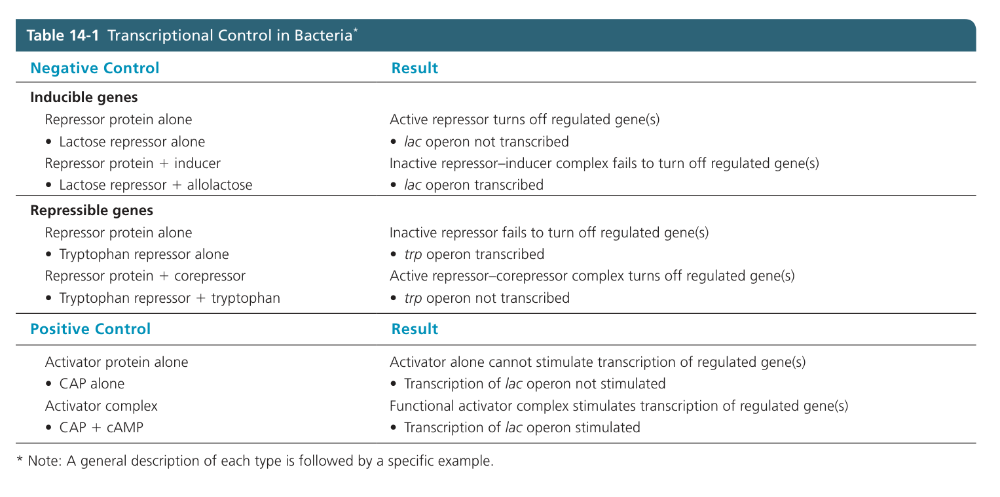
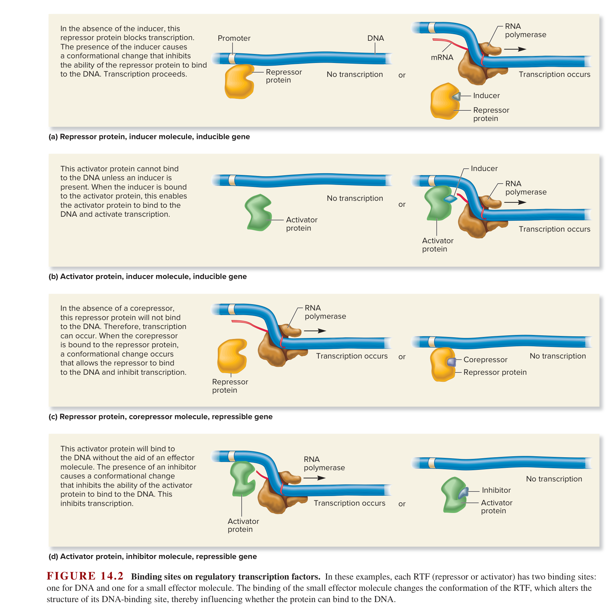
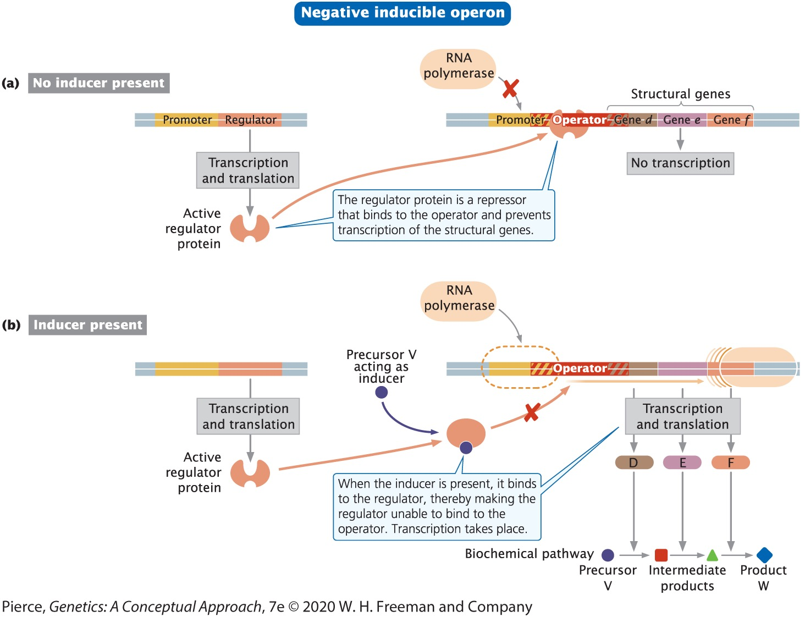
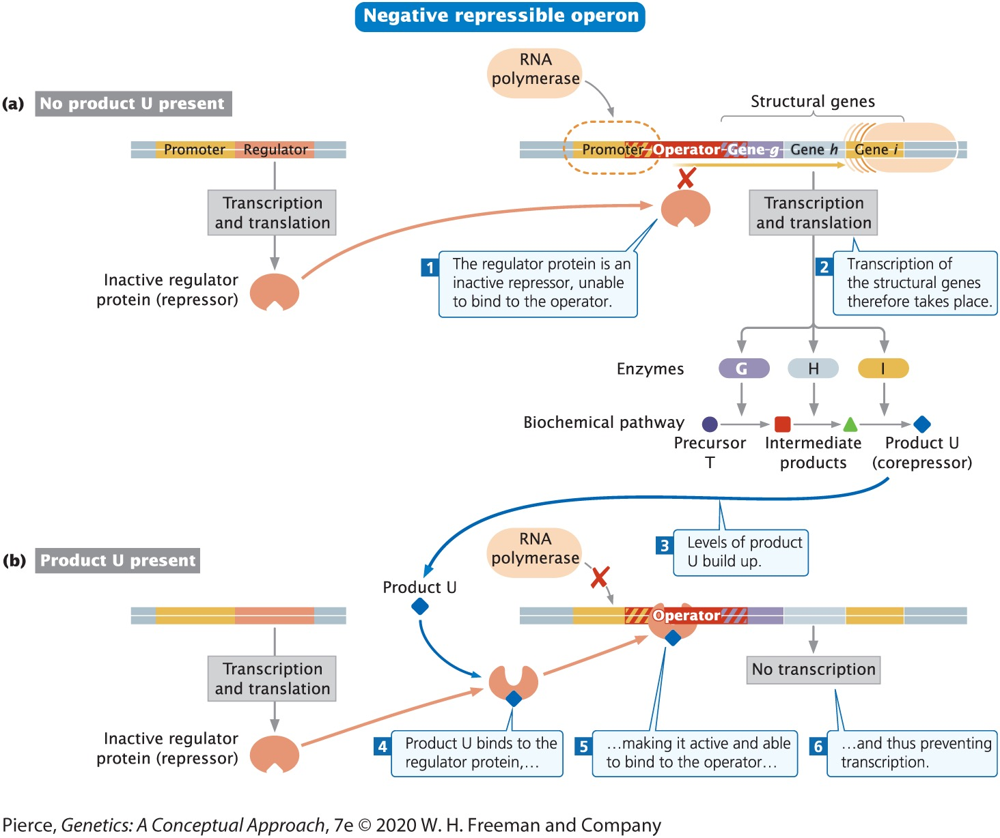

原核細胞的基因表現調控分類：正／負調控 vs. 持續型／可誘導型／可抑制型
為什麼「乳糖誘導打開 lac 操縱組」其實屬於負調控，而不是正調控？一次拆解兩條獨立分類軸線、遺傳學 2 × 2 四種交叉調控型態，並完整對照 8 套普通生物學與 5 套遺傳學原文正典。
原核細胞的基因表現分類最常讓人搞混，是因為大家把兩條完全不同的分類軸線混在一起：
- 軸線一（基因平常開或關、怎麼回應環境）：分為持續型（永遠開、不受環境開關控制）、可誘導型（預設關、有誘導物才開）與可抑制型（預設開、產物夠多才關）。
- 軸線二（調控蛋白踩煞車還是踩油門）：分為負調控（主角是抑制蛋白，結合 DNA 就阻擋 RNA 聚合酶）與正調控（主角是活化蛋白，結合 DNA 就吸引並加速 RNA 聚合酶）。
因此「打開基因（誘導）」絕不等於「正調控」！lac 操縱組加入乳糖後轉錄打開，是因為異乳糖把「煞車（LacI 抑制蛋白）」鬆開，屬於負調控 × 可誘導型；真正踩下「油門」的是低葡萄糖時結合 DNA 的 CAP–cAMP，那才屬於正調控。
01 軸線一：持續型 vs. 可誘導型 vs. 可抑制型（依表現狀態分）
先別管是哪種調控蛋白，單純看「這組基因平常開不開、會不會隨環境物質改變」，原核細胞的基因分成三大類：
| 類型 | 預設狀態 | 調控開關與代謝邏輯 | 原核細胞代表例子（普生＋遺傳學共識） |
|---|---|---|---|
| 持續型表現 （constitutive；常對應管家基因） |
永遠開啟 （不受環境開關調控） |
細胞隨時生存必備，不管環境怎麼變都穩定轉錄；表現量高低由啟動子強弱決定（強啟動子產量大、弱啟動子產量小）。 | • 糖解作用酵素（Freeman 8e、Campbell 12e/13e、Solomon 11e） • RNA 聚合酶基因（Solomon 11e 習題）、σ⁷⁰ 辨識的管家基因（Sadava 12e、Goldberg 7e） • 調節基因本身：lacI、trpR、CAP、lexA（弱啟動子低量持續表現） |
| 可誘導型 （inducible） |
預設關閉 （僅極低基礎轉錄） |
需要特定小分子（誘導物 inducer）出現才能開啟；多見於分解代謝（catabolic）路徑——有食物受質才開工，避免白做酵素。 | • lac 操縱組（乳糖／異乳糖誘導） • gal（半乳糖）、ara（阿拉伯糖）、mal（麥芽糖）操縱組 • 費氏弧菌 luxICDABE（群體感應自誘導物；Goldberg 7e） • SOS 調節組（DNA 損傷誘導；Freeman 8e、Klug 12e） |
| 可抑制型 （repressible） |
預設開啟 （平常持續轉錄） |
當終產物（輔抑制物 corepressor 或抑制物 inhibitor）累積過多時才關閉；多見於合成代謝（anabolic）路徑——缺原料自己做，夠用就停工。 | • trp 操縱組（色胺酸過多時關閉；普生與遺傳學核心正例） • 其他胺基酸／核苷酸合成路徑（his、leu、phe、thr 另具衰減調控；Solomon 11e 習題舉腺嘌呤合成酵素） |
正常大腸桿菌的 lac 操縱組屬於可誘導型；但若因為突變導致抑制蛋白失效（lacI⁻）或操作子無法結合抑制蛋白（lacOᶜ），原本該受調控的基因就會變成永遠開著——遺傳學上稱這種突變株表現為持續型突變（constitutive mutation）。它本質上是「煞車壞掉」，不同於原本就不需要開關的管家基因。
02 軸線二：負調控 vs. 正調控（依調控蛋白功能分）
第二條軸線只看一件事：當調控蛋白結合到 DNA 上時，它對 RNA 聚合酶做了什麼？
| 比較項目 | 負調控（negative control） | 正調控（positive control） |
|---|---|---|
| 主角調控蛋白 | 抑制蛋白（repressor） | 活化蛋白（activator） |
| 結合 DNA 後的效果 | 結合於操作子（operator），物理阻擋或干擾 RNA 聚合酶起始轉錄 → 降低／關閉轉錄 | 結合於啟動子旁的活化位，直接接觸並穩定吸引 RNA 聚合酶 → 提高／促進轉錄 |
| 科學圖像理解 | 就像煞車系統：蛋白一結合到 DNA，轉錄就停下來 | 就像油門系統：蛋白一結合到 DNA，轉錄才加速啟動 |
| 原核代表實例 | • lac 操縱組的 LacI 抑制蛋白 • trp 操縱組的 TrpR 抑制蛋白 • SOS 調節組的 LexA 抑制蛋白 |
• lac 等上百個分解操縱組的 CAP（CRP）–cAMP • 麥芽糖操縱組的 MalT、阿拉伯糖操縱組的 AraC • 費氏弧菌發光操縱組的 LuxR |

🔍 點擊放大檢視原圖
🔍 點擊放大檢視原圖03 進階大統整：2 × 2 四種交叉調控型態（遺傳學核心框架）
把軸線一（可誘導／可抑制）與軸線二（負調控／正調控）交叉，就能推導出遺傳學最完整的 4 種轉錄調控型態。在本次盤點的全部 13 套課本中，Brooker 遺傳學 8e（圖 14.2）是唯一用一張總覽圖把四種機制完整畫出來的正典！
| 交叉型態 | 調控蛋白與剛合成活性 | 小分子效應物與作用 | 預設 → 加效應物後 | 13 套課本實例盤點 |
|---|---|---|---|---|
| 1. 負調控 × 可誘導型 （負誘導） |
抑制蛋白 剛合成即有活性（結合 DNA） |
誘導物（inducer）結合抑制蛋白 → 變構脫離 DNA | 預設關閉 → 開啟 | • lac 操縱組（異乳糖；12 套全舉） • gal 操縱組（Goldberg 7e） • SOS 調節組 / lexA（Freeman 8e、Klug 12e） |
| 2. 負調控 × 可抑制型 （負抑制） |
抑制蛋白 剛合成時無活性（不結合 DNA） |
輔抑制物（corepressor）結合抑制蛋白 → 活化並結合 DNA | 預設開啟 → 關閉 | • trp 操縱組（色胺酸；10 套課本均舉） |
| 3. 正調控 × 可誘導型 （正誘導） |
活化蛋白 剛合成時無活性（不結合 DNA） |
誘導物（inducer）結合活化蛋白 → 活化並結合 DNA | 預設關閉 → 開啟 | • CAP（CRP）–cAMP（Brooker 8e 明確稱 cAMP 為誘導物，活化 lac、gal、ara、mal 等上百個操縱組） • ara 阿拉伯糖操縱組（Pierce 7e Q26） • mal 麥芽糖操縱組 / MalT（Goldberg 7e） • 費氏弧菌 luxICDABE / LuxR（Goldberg 7e） |
| 4. 正調控 × 可抑制型 （正抑制） |
活化蛋白 剛合成即有活性（結合 DNA） |
抑制物（inhibitor）結合活化蛋白 → 變構脫離 DNA | 預設開啟 → 關閉 | ⚠️ 重要查證發現：12 套已譯本正文與習題均未舉任何真實原核操縱組為例；僅以理論圖解與假設題演練（Brooker 8e 圖 14.2d / C3 / C5、Pierce 7e TPS Q3、Klug 12e 題 20 假設 tis 操縱組）。 |

🔍 點擊放大檢視原圖
🔍 點擊放大檢視原圖
🔍 點擊放大檢視原圖04 全 13 套課本盤點對照：普通生物學 8 套 vs. 遺傳學 5 套
將普通生物學與遺傳學並列檢視，會發現一個非常清楚的教材階梯：全部 8 套普通生物學都不會展開 2 × 2 四象限（集中在負誘導 lac、負抑制 trp、正調控 CAP–cAMP 與持續型基因）；到了遺傳學課本，才會把「正／負」與「誘導／抑制」徹底解耦成兩條獨立軸線。
A. 普通生物學 8 套（02 普通生物學）
| 課本與章節 | 正／負 | 持續型 | 誘導／抑制 | 2×2 四象限 | 該書特色與主要實例 |
|---|---|---|---|---|---|
| Solomon 11e（Ch. 14） | ✅ 有 | ✅ 有專節 | ✅ 皆有 | ❌ 三欄表 | 普生最系統：專節講持續型基因強／弱啟動子；表 14-1 整合負誘導／負抑制／正調控。 |
| Sadava 12e（Ch. 16） | ✅ 有 | ✅ 有 | ✅ 皆有 | ❌ 無 | 對比可誘導 vs. 持續型蛋白質，並以 σ⁷⁰（管家基因）vs. σ³⁸（逆境基因） 說明原核管家基因。 |
| Campbell 12e / 13e（Ch. 18） | ✅ 有 | ⚠️ 弱提 | ✅ 皆有 | ❌ 無 | 明確將 trp 與 lac 並列為負調控兩類，特別澄清異乳糖誘導屬於負調控、CAP 才屬正調控。 |
| Raven 13e（Ch. 16） | ✅ 有 | ⚠️ 弱提 | ✅ 皆有 | ❌ 無 | 直球點破「表面上誘導像正、抑制像負，其實兩者皆為抑制蛋白負調控」。 |
| Freeman 8e（Ch. 18） | ✅ 有 | ✅ 有 | ⚠️ 未定名可抑制操縱組 | ❌ 無 | 圖 18.4 負調控煞車／正調控油門極直覺；把 trp 稱負回饋控制；多舉 SOS 調節組（lexA）。 |
| Brooker 4e（Ch. 12） | ✅ 有 | ✅ 有 | ⚠️ 僅可誘導 | ❌ 無 | 引言清楚定義持續型／管家基因（碳水化合物分解酵素），但本章未展開 trp 操縱組。 |
| Starr 14e（Ch. 10） | ❌ 未定名 | ❌ 無 | ❌ 無 | ❌ 無 | 8 套中最簡略，僅講 lac 雙操作子成環與維生素 B₁₂ 核糖開關，未定義正負／誘導／抑制。 |
B. 遺傳學 5 套（08 遺傳學）
| 課本與章節 | 正／負 | 持續型 | 誘導／抑制 | 2×2 四象限 | 該書特色與主要實例 |
|---|---|---|---|---|---|
| Brooker 8e（Ch. 14） | ✅ 有 | ✅ 有 | ✅ 皆有 | ✅ 最完整 | 全部 13 套唯一以圖 14.2 完整畫出 4 象限規則的課本；提及 CAP 活化 mal、ara、mel 等上百個操縱組。 |
| Pierce 7e（Ch. 16） | ✅ 有 | ✅ 有 | ✅ 皆有 | ⚠️ 習題補齊 | 正文以圖 16.4／16.5 對照負誘導與負抑制並另述 CAP；習題補齊 ara（Q26）與正誘導／正抑制推理（TPS Q3）。 |
| Klug 12e（Ch. 16） | ✅ 有 | ✅ 有 | ✅ 皆有 | ⚠️ 理論＋習題 | 16.1 宣告誘導或可抑制皆可受正／負控制；進階挑戰題（題 18、20、21）完整操演正誘導與正抑制。 |
| Goldberg 7e（Ch. 18） | ✅ 有 | ⚠️ 突變與 σ⁷⁰ | ✅ 皆有 | ❌ 無四象限 | 講通分解／合成代謝演化邏輯，並額外舉出費氏弧菌 luxICDABE／LuxR、gal、mal（MalT）。 |
| Simons (2025) | — | — | — | — | 查證邊界：資料庫目前僅預先裁圖 Ch01–Ch18（Ch08 對應基因調控），全書尚未翻譯任何文字章節。 |
05 代表性原文正典中英原句對照
以下精選遺傳學與普通生物學最具代表性的原文定義段落，保留完整英文原句與中文譯文，方便備課或命題查核。
"There are two types of transcriptional control: negative control, in which a regulatory protein is a repressor, binding to DNA and inhibiting transcription; and positive control, in which a regulatory protein is an activator, stimulating transcription. Operons can also be either inducible or repressible. Inducible operons are those in which transcription is normally off (not taking place); something must happen to induce transcription, or turn it on. Repressible operons are those in which transcription is normally on (taking place); something must happen to repress transcription, or turn it off."
轉錄調控分兩種：負調控由抑制蛋白結合 DNA 抑制轉錄；正調控由活化蛋白刺激轉錄。操縱組也可分為可誘導型（預設關閉，需被打開）或可抑制型（預設開啟，需被關閉）。
06 高中課堂秒懂口訣、教甄反推題技巧與查證邊界
第一步：先問「這組基因平常是開還是關？」
永遠開且不看環境 → 持續型；平常關、有分子來才開 → 可誘導型；平常開、成品夠多才關 → 可抑制型。
第二步：再問「如果把調控蛋白基因整個敲除（破壞），這組基因會怎樣？」
調控蛋白不見了，基因反而永遠打開（煞車壞掉） → 原本是負調控！
調控蛋白不見了，基因從此永遠打不開（油門壞掉） → 原本是正調控！
延伸閱讀（本站操縱組系列專題）
- 想看 lac 操縱組如何用「基礎漏轉錄＋PTS 磷酸接力＋誘導物排除」同時偵測乳糖與葡萄糖，請見 大腸桿菌如何感測葡萄糖與乳糖？。
- 想看普通生物學 8 套課本各自怎麼交代「第一批乳糖如何進入細胞」，請見 普生 8 套課本怎麼講大腸桿菌偵測乳糖？。
- 想看沒有 DNA 定序的年代如何靠部分二倍體推論出整套 lac 調控線路，請見 Pierce 操縱組推論過程。
- 想釐清操作子本身會不會轉錄轉譯，以及真核細胞為何幾乎沒有操縱組，請見 操作子會不會被轉錄與轉譯？ 與 為什麼原核有操縱組，真核卻幾乎沒有？。
本頁完整盤點 02 普通生物學 全部 8 套譯本與 08 遺傳學 全部 5 套教科書。需誠實標明兩點查證邊界：（1）Simons_Genetics (2025) 目前僅預先裁切 Ch01–Ch18 圖檔（Ch08 對應基因調控），全書尚未翻譯任何文字章節，故未納入文字對照；（2）關於 2 × 2 矩陣中的「正調控 × 可抑制型（正抑制）」，已翻譯的 12 套普生與遺傳學課本均僅以理論圖解（Brooker 8e 圖 14.2d）或假設性習題呈現，均未列舉真實原核操縱組實例。所有中文術語皆對齊臺灣教育部《生命科學名詞》（持續表現型基因、可誘導型／可抑制型操縱組、正調控／負調控、輔抑制物、抑制蛋白、活化蛋白、操作子）。